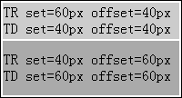
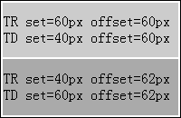

关于 W3C CSS 2.1 中表格高度计算规范请参考：http://www.w3.org/TR/CSS21/tables.html#height-layout
IE6(Q) IE7(Q) IE8(Q) 中 TR 元素的最终高度始终不会超过其所有 TD 子元素的高度。
这个现象将造成表格单元格高度的计算差异，若单元格行数较多，可能最终造成表格的总高度在不同浏览器中出现很大的区别。
| IE6(Q) IE7(Q) IE8(Q) |
|---|
TR 元素即 "display:table-row" 的元素，用来作为一行内的单元格的容器。
在用户端得到一行内的所有单元格后即开始表格行（TR 元素）的计算。根据规范中描述，他的高度为：
"行内各单元格指定了 'height' 特性的最大值" 和 "单元格要求的最小高度（MIN） " 中较大的值。若其 'height' 特性为 'auto'，则计算出的高度为 MIN。
分析以下代码：
<table style="width:200px; border:1px solid black;">
<tr id="tr1" style="height:60px;">
<td id="td1" style="height:40px; background:#CCC;">1</td>
</tr>
<tr id="tr2" style="height:40px;">
<td id="td2" style="height:60px; background:#AAA;">2</td>
</tr>
</table>
<script>
function $(id) { return document.getElementById(id); }
$("td1").innerHTML = "TR set=" + $("tr1").style.height + " offset=" + $("tr1").offsetHeight + "px"
+ "<br /> TD set=" + $("td1").style.height + " offset=" + $("td1").offsetHeight + "px";
$("td2").innerHTML = "TR set=" + $("tr2").style.height + " offset=" + $("tr2").offsetHeight + "px"
+ "<br /> TD set=" + $("td2").style.height + " offset=" + $("td2").offsetHeight + "px";
</script>
上面代码的表格中有两行，第一行的 TR 高度设置为 60px，TD 高度设置为 40px。第二行TR高度设置为 40px，TD 高度设置为 60px。
这段代码在不同浏览器中运行结果如下：
| IE6(Q) IE7(Q) IE8(Q) | IE6(S) IE7(S) IE8(S) Firefox Chrome Safari Opera |
|---|---|
|  |  |
可见，对于所有浏览器，当 TR 元素的设定高度小于其 TD 子元素时，TR 元素被 TD 子元素撑大。
而当TR元素的设定高度大于其 TD 子元素时：
避免为 TR 设置高度。
| 操作系统版本: | Windows 7 Ultimate build 7600 |
|---|---|
| 浏览器版本: |
IE6 IE7 IE8 Firefox 3.6 Chrome 4.0.302.3 dev Safari 4.0.4 Opera 10.51 |
| 测试页面: | ie_tr_height.html |
| 本文更新时间: | 2010-08-09 |
float clear 清除浮动 位置